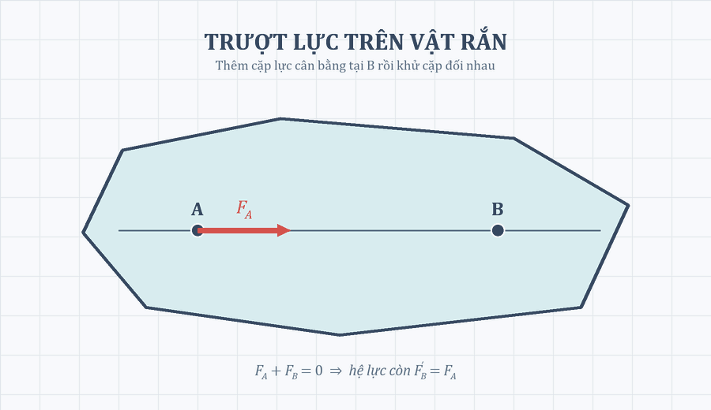

Mục tiêu cục bộ: obj-ch1-force-sliding
Theo dõi lực trượt từ A đến B
Quan sát vì sao thay điểm đặt trên cùng đường tác dụng không đổi tác dụng của lực lên vật rắn.
Hình minh họa

Phương án tĩnh: lực tại A và lực cùng phương, cùng chiều, cùng độ lớn tại B biểu diễn hai hệ lực tương đương trên vật rắn.
Đang chuẩn bị phương án phù hợp.